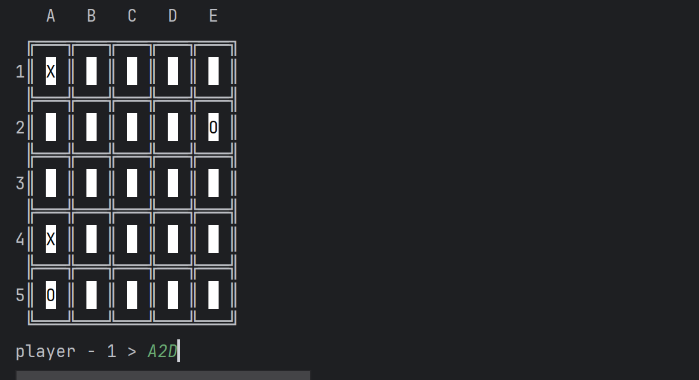

SAE S2 · étude de cas
Jeu de plateau Quixo en Java, architecture MVC
Jeu complet en console, construit sur la bibliothèque imposée Boardifier.
- Semestre
- S2
- Année
- 2025
- Équipe
- Individuel
- Langage
- Java
01Architecture
- Modèlerègles du jeu
- Contrôleursaisie des coups
- Vuerendu du plateau
Séparation imposée par Boardifier, bibliothèque dédiée aux jeux de plateau.
02Ce que j'ai réalisé
- Redéfinition des classes de rendu de Boardifier par héritage et polymorphisme, pour personnaliser l'affichage du plateau sans modifier le cœur de la bibliothèque.
- Une saisie robuste : les commandes du type
A2D(case de départ + direction) sont validées avant chaque coup, avec un message d'erreur clair en cas de saisie invalide. - Une boucle de jeu qui n'avance qu'avec une entrée conforme et applique les règles de Quixo à chaque tour.

03Compétences mobilisées
Programmation orientée objet (héritage, encapsulation, redéfinition de méthodes, polymorphisme), gestion des entrées utilisateur, et respect d'une architecture logicielle existante.